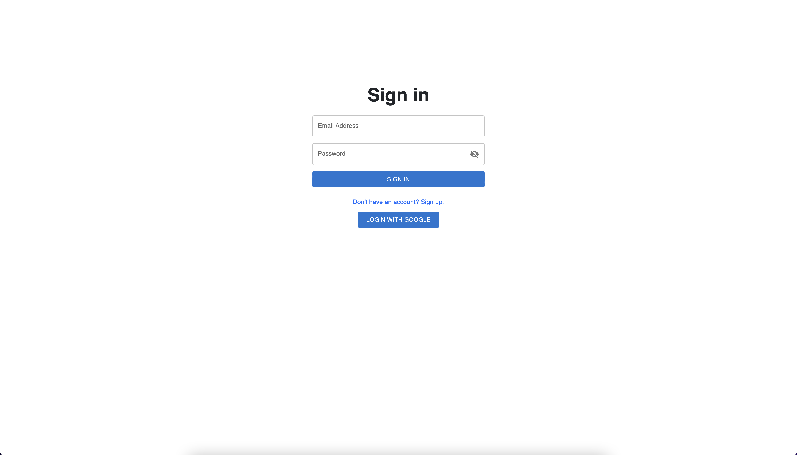
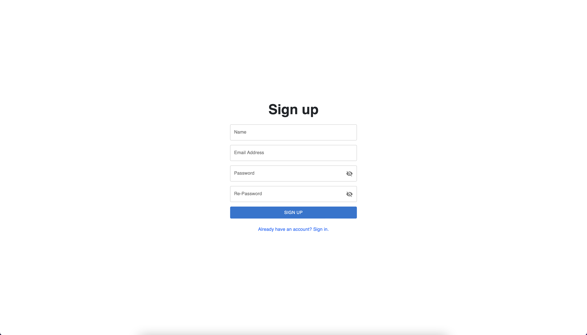
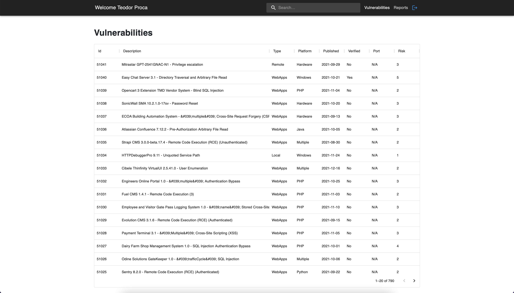
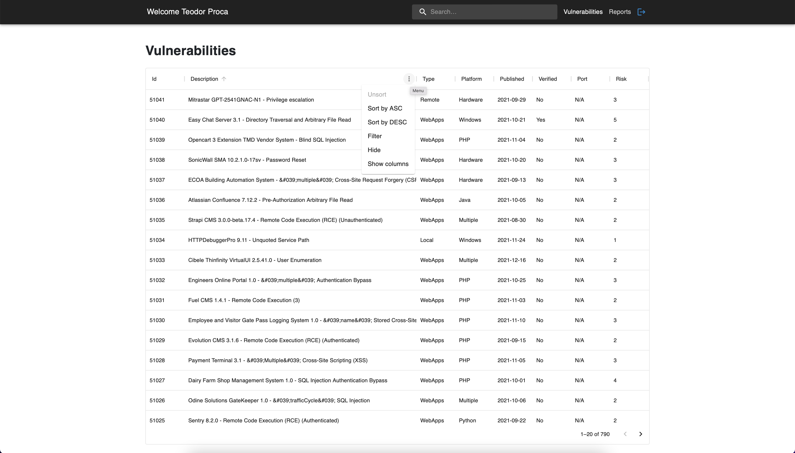
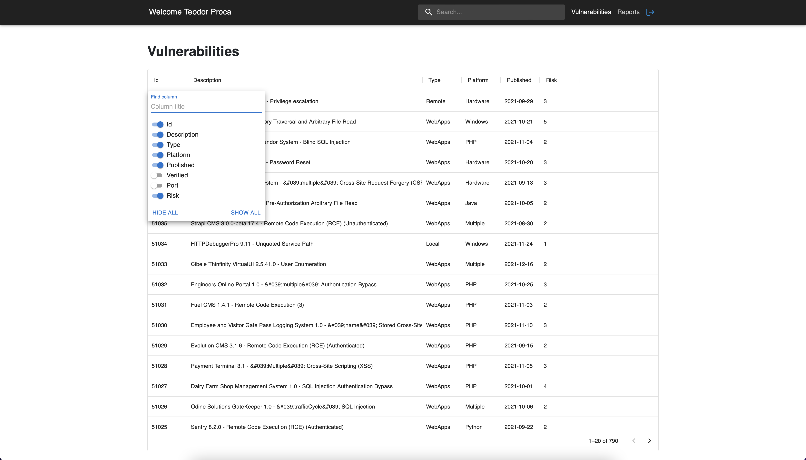
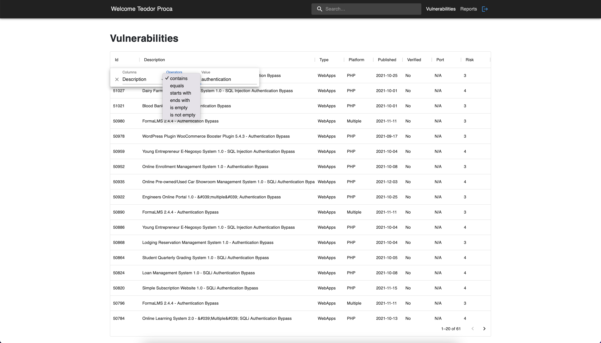
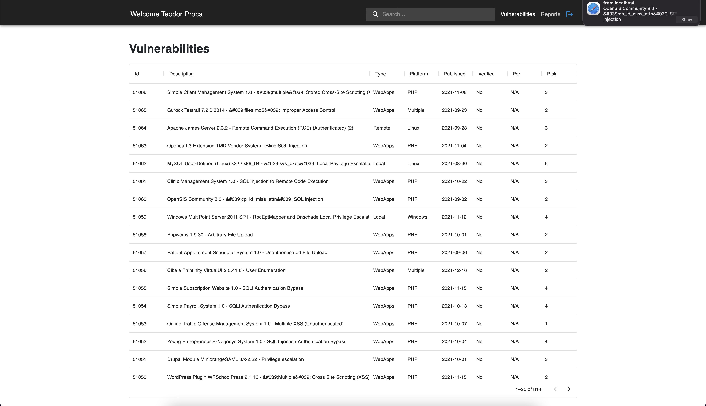
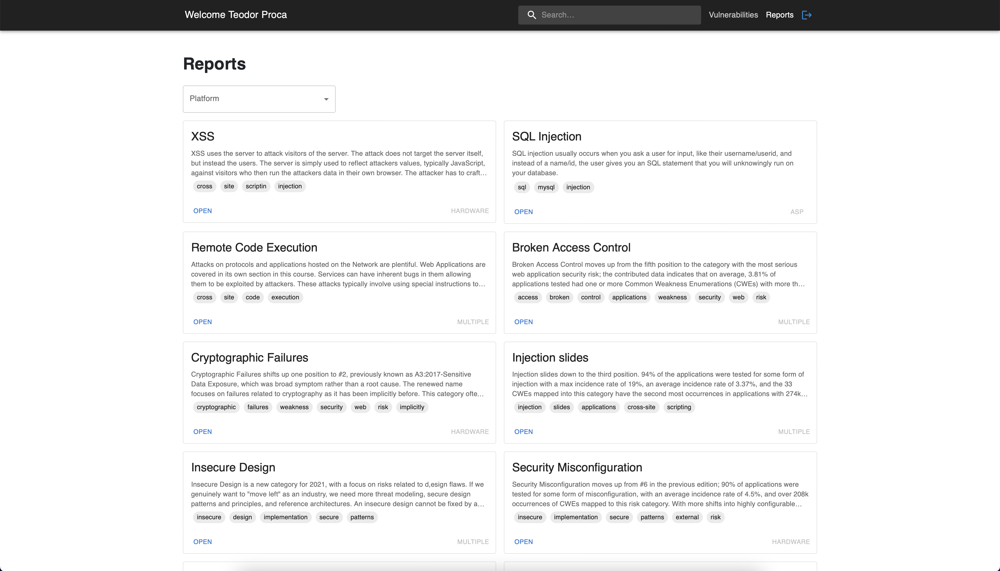
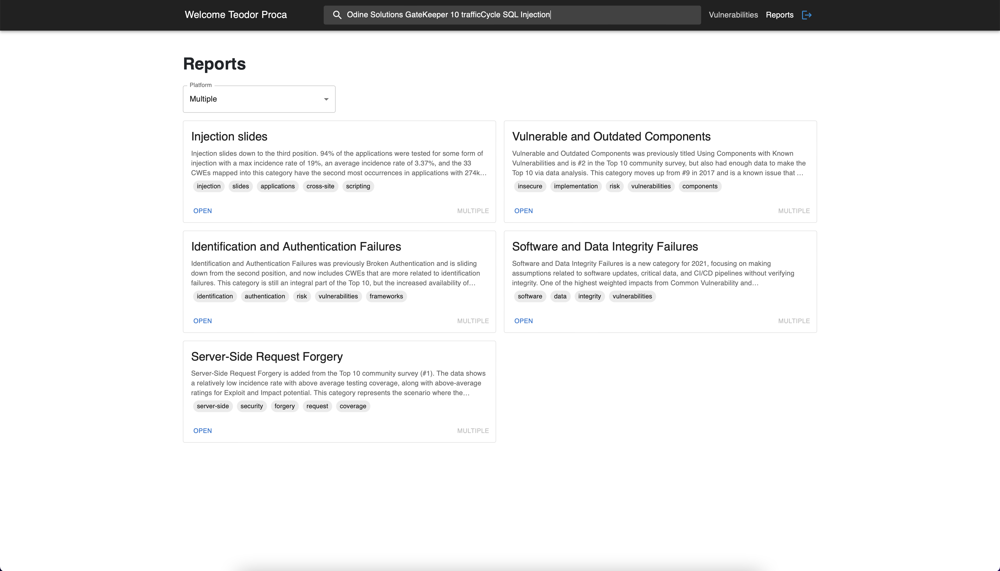

This document represents a user guide highlighting what the ASC (Application Security Control) Project has to offer as features. You can explore functionalities like viewing the current vulnerabilities, get real-time notifications when a new vulnerability occurs, view preventions for vulnerabilities and more.
If you want to check out the technical documentation, you can do that by clicking here. For the entire code of the application you can click here.
Once you accessed the application, you should end up on the page presented in the following picture.
 Sign in pageIn this page you can choose between two possible flows: sign in with email and password or sign in with Google.
If you choose to sign in with email and password, after you complete the inputs you can press the "SIGN IN" button to proceed. If you have an account, you'll be redirected to the vulnerabilities page, otherwise an error will appear. If you don't have an account you can click on the "Don't have an account? Sign Up." button to go to the sign up page.
If you choose to sign in with Google, you can do that by pressing the "LOGIN WITH GOOGLE" button. Once pressed you havce to complete the promp from Google and select the account. If you don't have an account with that email address, an account will be created and you'll be redirected to the vulnerabilities page.
In this page you can create new account and use them to sign in into the application.
 Sign up pageThe Sign up page has four basic inputs: name, email (which will be used for authentication) and the password fields. In order to allow the user to create his account, the password fields must match. Once the fields are completed, you can press the "SIGN UP" button. After the process of creating the account is finished successfully, you will be redirected to the login page.
Once the user is authenticated, he is redirected to the Vulnerabilities page. The vulnerabilities are structured in the form of a table with the following columns: id, description, type of the vulnerability, platform on which the vulnerability can happen, published is the date when the issue was first detected, verified is true if the vulnerability was confirmed to be malicious, port and more importantly, the risk which represents the level of impact of each security issue.
 Vulnerabilities pageThere are several options of filtering the vulnerabilities from the table. You can sort each column either in ascending, either in descending order, you can hide or show some columns or you can filter them based some custom criteria.
 Vulnerabilities pageFor example, as you can see in the second picture below, we removed the Verified and Port columns by unchecking the columns.
 Vulnerabilities pageFor more advanced filtering options, you can filter by each column by using an operator by choice: contains, equals, starts with, ends with, is empty or is not empty. In the case below, we were interested in finding all the vulnerabilities related to authentication so we selected that the description must contain the keyword "authentication".
 Vulnerabilities pageEverytime a new security issue is detected and added into the application, you will be notified in realtime about it and the interface will be updated accordingly to contain the latest vulnerabilities. This way, you will always be aware and you will be able to minimize the impact in case of a high severity vulnerability.
 Vulnerabilities pageThis page provides various solutions like technical reports and defensive programming guidelines to help preventing some security issues. Each report has a title, the platform on which it can occur, a concise and clear description regarding the issue and a list of related keywords. The more recent updates regarding web application security are covered by OWASP Top 10 Web Application Security Risks and were added especially for raising the awareness for our users.
 Reports pageMoreover, the reports can be as well filtered by platform and you are also able to search based on keywords matching the title, the description of the list of keywords from each report.
Furthermore, by clicking on a vulnerability you can identify related techincal reports and links about the vulnerability in cause. The returned reports must match either the platform of the vulnerability or title, either its content contains keywords from the vulnerability's description. In the picture below, the "Odine Solutions GateKeeper 10 trafficCycle SQL Injection" was previously selected. As a result, five related reports were identified on multiple platforms and having several keywords in common.
 Reports pageTo conclude, the current application represents a solution useful for any developer who is interested in keeping their applications secure and who want to be aware of the latest security issues and prevention methods. As for the future work, we propose enhancing the available information regarding the vulnerabilities and related technical reports, pieces of advice and defensive programming guidelines.